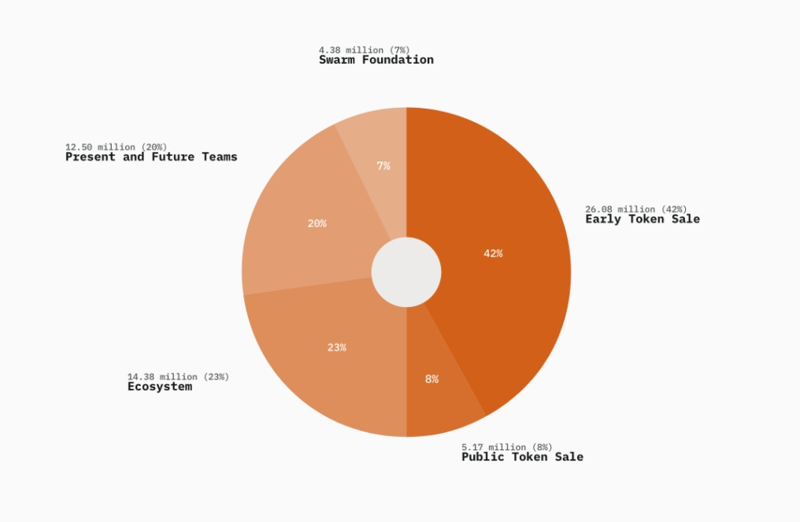
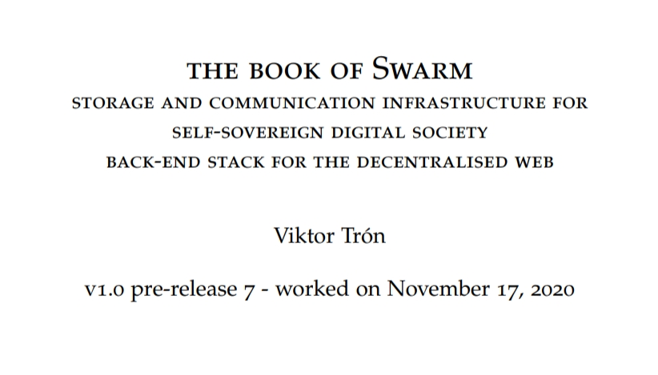

本篇文章不構成投資建議，僅作為資料整理之用
不故弄玄虛、不捧不吹、多少資料講多少話
這次購買機制有點複雜，如果你是來找購買機制介紹，我放在手把手教你Swarm ICO和CoinList中，3. 回答題目，了解購買機制這裡。
說是全面解析，事實上技術向內容我不想多談，因為其實意義不大，我一個菜鳥哪有可能審計大神的代碼。不管是官方文件還是GitHub內容一定漂漂亮亮的好嘛😂我的全面解析是…我能夠幫你找到冷門的有價值消息。
在一個不到700人訂閱的YT頻道中，你可以看到他們真的花了很多時間在討論和鑽研技術。我相信在一個不到700人訂閱的頻道中，應該不存在「假裝我們很忙」這種套路對吧？🤗
另外你可以自行上網查各大加密貨幣新聞，應該都能找到他是從2015年以太方基金會中孵化出來的項目。這種老項目不多了。不過起跑早，真正上線卻一等6年過去了…
如果你還是對於技術很有興趣，這篇英文圖文解說是我覺得寫得最好的，內容扎實不含糊。算是技術向入門。
OK，從技術面來看，我信了。但是商業面呢？我們拭目以待。
近期好消息
-
過去在CoinList上進行ICO的幣種整理👇
比較有名的是Solana公鏈、Filecoin(同樣為去中心化儲存項目)、和Flow(NBA Top Shot卡牌)。
你可以看到ROI USD，就是他們ICO的價格到現在的價格成長了多少，最神奇的大概是Flow的140倍(嗚嗚我沒參與到)，而ATH ROI代表他們ICO價格到歷史最高成長幾倍。
必須要說，有的項目並沒有很賺錢，而爆賺的這幾個項目共同點大概是"知名"，將觸手伸出了加密貨幣以外的圈子。
但我認為這樣的投資報酬率值得嘗試(記得高風險😉) -
第一輪的私募價格為0.2美元，第二輪私募為0.25美元，我們能買到的公募價格為1.92美元，
目前有消息指稱，有人在場外交易以30美元購買。但是，此消息目前存疑！
經過我深挖結果，目前BZZ在二線交易所價格如下(我這樣講會很過分嗎？)
LBank：05/15上線，目前278USDT。
XT.com：05/31上線，目前167USDT。
這兩家交易所在CoinMarketCap和CoinGecko，排名大概介於20多~50多名。我想應該能稱呼為二線交易所。但我不為他們兩家安全性掛保證。甚至如果他們是在虛報價格來炒作BZZ，我也不會太意外。
在各小的交易所價格如下👇
去中心化儲存如何估值
我們來做橫向對比。
CoinmarketCap整理了所有儲存項目。
Filecoin：59億
BitTirrent：23億
Holo：13億
Sia：7.6億
很火的Chia(XCH)其實…排不上名次。2.9億美元。
回到Swarm，以這張圖計算👇

總共6,251萬枚代幣。每一枚1.92去算的話是1億2000萬美元的估值。這樣橫向對比的話1.92美元依然有很大的上升潛力。
BUT！，以0.25美元入場的Early Token Sale實在佔太大一塊餅了，他們脫手變現的可能性也要考慮進去😕。
早期參與的礦工應該是Ecosystem那塊餅。關於挖礦水也有點深…
近期壞消息
-
Swarm其實已經不算Vitalik、Gavin Wood等人的項目了，我知道很多華文報導說他們的代碼都留在Swarm中，但實際上The book of Swarm白皮書作者是Viktor Trón，看看他的Twitter，他應該不算名人😰…
 -
我覺得華文圈有不少人對Swarm抱予過大的期待了，你可以看看這篇，思考一下你是不是因為Filecoin和chia而Fomo了。
-
Swarm並不是第一款去中心化儲存項目，這幾篇整理了他的前輩們0x資訊2021/05/13、區塊客2021/04/12、火星財經2021/03/31。簡單來講，沒有誰特別出色到一定能贏到最後，也可以說是各有擅場。
-
在這篇整理的「募款歷史」中，你會發現投資的機構並不豪華。(但是你看看明星陣容Fei Protocol翻車🤣)
-
Swarm項目近期幾乎從主流加密貨幣媒體中消失了！CoinTelegraph裡沒有、Coindesk最新的為2018。
我的想法
- 這種真的技術底層的東西幾乎沒有炒作價值，不像是Flow的NFT卡牌，一般人非常好入手與理解。無法出圈，幾乎不可能爆富。不過也不排除V神回來喊單，拜託了😢
- CoinList排隊出了名難排隊，根據不可靠統計為3~5%。如果你要多帳號記得
- 要用不同裝置註冊
- 不同IP註冊(你朋友開Wifi給你)
- 不同身分註冊，當然。CoinList會鎖帳號的，多帳號一定要小心。
-
去中心化儲存，我個人認為與現行DApp、DeFi串接最容易的項目能笑到最後，在這方面，以「智能合約」原生在以太坊上的Swarm或許會比自成一鏈的Filecoin、Arweave更有優勢。在KR1投資報告中可以看到以下描述"due to a built-in incentive system enforced through smart contracts on theEthereum blockchain."我們可以知道Swarm是以智能合約的方式存在以太坊，不需要跨鏈的。
-
但是去中心化儲存，真的有需求嗎？有甚麼資料一定非得要去中心化儲存不可？
中心化儲存的AWS、Google都好用太多了。唯一我想到一定要去中心化儲存的大概是維基解密…或者另一種，你想將你的NFT全套內容都放進去中心化儲存，實現真正的永久保存，沒有人可以刪除你的NFT，但…我們依然能放進中心化儲存就好？ -
目前我在Github上看到，活動是相當活躍的，但是看看貢獻者(contributors)35人，恩…有點難評價算多還是少，不太確定，如果有許多Dapp開發者在使用Swarm的話，遇到問題一定會回報一些pull request或是issue的。或許Dapp生態已經沒有Swarm的一席之地了…
-
以投資角度而言，目前Swarm的商業模型(或者挖礦獎勵機制)都非常不透明，在三大問題待解中也有說明。而相關的去中心化儲存生態也還沒看到蹤影，比較成熟的項目是Fair Data Society致力於人們的數據儲存從大公司中分離，回歸個人手上。
在機會超多，雷也超多的加密貨幣圈裡，XiXi Huang的啞鈴式投資很棒。間單來說是將你的投資額分為極度保守+極度激進，ICO就是我用少量的錢找爆擊機會的。投入時間研究+少量金錢，如果你要說這和研究賭馬或六合彩一樣…我會說
基努李維帥翻天🥰
看到這裡你大概還是想要參加Swarm ICO，請閱讀手把手教你Swarm ICO和CoinList｜實作篇，另外我創了一個Line群組做為討論這次活動之用。
群組連結
目前唯一中文講解的影片币圈老韭菜，帶你用中文看一遍CoinList官網上的英文內容。但我個人看完覺得內容還是比較淺的，並沒有特別讓人拍手叫好的技術。也分析了公開資料的一些問題：像是早期私募大老份額占到40趴、團隊占了20%。
我目前找到最詳細的中文Swarm節點架設教學，來自知乎。其他的資訊可以參考Swarm之家。
有個名稱相近的Swarm Network(SWM)，是2018年想要做股權代幣的，被Coinbase和Ripple拒絕了。名稱相近但兩者間沒關係。這也是為甚麼Swarm的代幣只好改叫(BZZ)。
以太坊的去中心化儲存項目列表
其他去中心化儲存
另一款去中心化儲存項目Arweave。文章很長，雖然內容是在講AR，但很適合你初步認識去中心化儲存世界。是獨立建另外一條鏈的。(待確認，也有人認為AR算是IPFS協議上的應用層)
官方資料
THE BOOK of Swarm
Github
Swarm推特，目前1萬Fellower。
Discord群，目前30,000名成員。裡面有中文頻道，可以進去看看。
Reddit群，目前869Members。有趣的是目前有人對CoinList不太滿意。
Swarm一詞可能源自於中本聰2010/12/11在論壇上的發文。「the swarm is headed towards us」。
第三方資料
- coinmarketcap
- 非小號
- 目前Coingecko還沒上BZZ